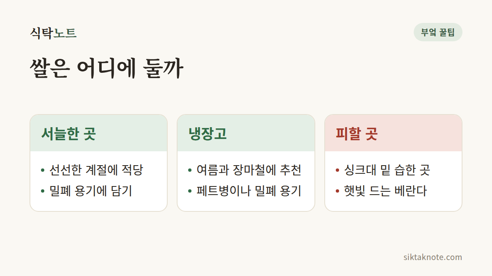

쌀 보관하는 법 — 쌀벌레 안 생기게 지키는 방법

3줄 요약
- 쌀은 밀폐 용기에 담아 서늘하고 그늘진 곳에 두세요.
- 기온이 오르는 여름철에는 냉장고 채소칸에 보관하면 쌀벌레를 막기 쉬워요.
- 벌레가 생겼다면 냉동실에 며칠 두거나 펼쳐 말려서 골라내고, 심하면 버리세요.

어떻게 해야 할까요
쌀은 공기, 습기, 온도 이 세 가지만 잘 막아주면 맛이 오래 가요.
- 밀폐 용기에 옮겨 담기: 포대째 두지 말고 뚜껑 있는 쌀통, 김치통, 큰 페트병 등 공기가 덜 드나드는 용기에 담으세요.
- 서늘하고 그늘진 곳: 직사광선이 닿지 않고 바람이 잘 통하는 곳이 좋아요. 싱크대 아래는 습기가 차기 쉬워서 피하세요.
- 여름에는 냉장 보관: 날이 더워지면 쌀벌레가 생기기 쉬워요. 2~3kg씩 소분해 냉장고 채소칸에 넣어두면 안심이에요.
- 쌀통은 비운 뒤 닦기: 쌀을 새로 채우기 전에 쌀통을 깨끗이 닦고 완전히 말리세요. 옛 쌀가루가 남아 있으면 벌레가 꼬이기 쉬워요.

쌀벌레가 생겼다면
- 쌀을 신문지나 넓은 쟁반에 펴고 그늘에서 말리며 벌레를 골라내세요.
- 쌀을 지퍼백에 담아 냉동실에 며칠 두면 벌레와 알이 죽어서 이후 번지는 것을 막을 수 있어요.
- 거미줄 같은 실이 뭉쳐 있거나 쌀이 가루처럼 부서지고 냄새가 난다면 아깝더라도 버리세요.

쌀 양은 어떻게 정할까
쌀은 도정한 지 오래될수록 맛과 향이 떨어져요. 한 번에 큰 포대를 사기보다 한두 달 안에 먹을 양만 사는 게 좋아요. 4인 가족이면 10kg, 1~2인 가구는 4~5kg 정도가 적당해요.
왜 그런지
쌀벌레는 쌀 속에 있던 알이 따뜻하고 습할 때 깨어나서 생겨요. 그래서 온도를 낮추고 공기를 막아주는 냉장 보관과 밀폐가 가장 확실한 방법이에요.
주의할 점
쌀통에 마늘이나 붉은 고추, 숯을 넣으면 좋다는 이야기가 있어요. 도움이 된다는 사람도 있지만 효과가 확실하지 않으니, 가장 중요한 건 밀폐와 서늘한 온도라고 보시면 돼요.
쌀은 "밀폐, 서늘, 소량"만 기억하세요.